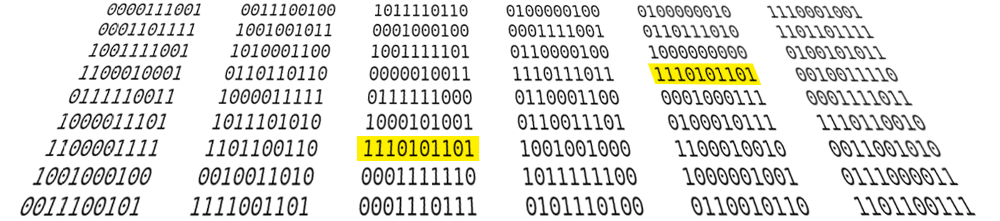

Fast Exact Search in Hamming Space with Multi-Index Hashing
Version 1.0 - Updated on Aug 21, 2012.

This is a C++/matlab implementation of the Multi-Index Hashing (MIH)
algorithm [1] for fast exact nearest neighbor search in Hamming distance
on binary codes. By using this code, one can reproduce most of the
results explained in the paper on 1 billion and 80 million
datasets. This implementation improves the storage efficiency of our
previous implementation described in the paper by utilizing sparse
hash tables.
You can download the latest version of our code
from github.com/norouzi/mih.
Reference
[1] An extended version of the conference paper,
arxiv.org/abs/1307.2982
[2] Fast Search in Hamming Space with Multi-Index Hashing,
Mohammad Norouzi, Ali Punjani, David Fleet,
IEEE Computer Vision and Pattern Recognition (CVPR), 2012. [pdf]
Abstract: There has been growing interest in mapping image data onto
compact binary codes for fast near neighbor search in vision
applications. Although binary codes are motivated by their use as
direct indices (addresses) into a hash table, codes longer than 32
bits are not being used in this way, as it was thought to be
ineffective. We introduce a rigorous way to build multiple hash tables
on binary code substrings that enables exact K-nearest neighbor search
in Hamming space. The algorithm is straightforward to implement,
storage efficient, and it has sub-linear run-time behavior for
uniformly distributed codes. Empirical results show dramatic speed-ups
over a linear scan baseline and for datasets with up to one billion
items, 64- or 128-bit codes, and search radii up to 25 bits.